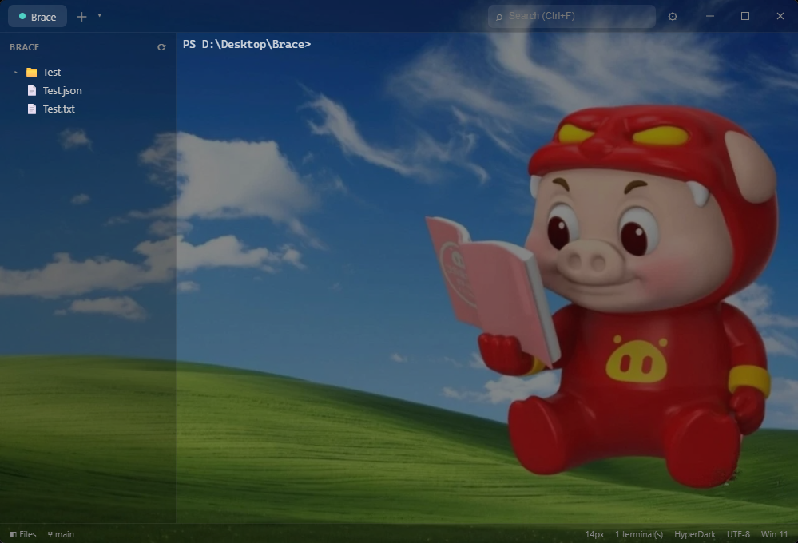
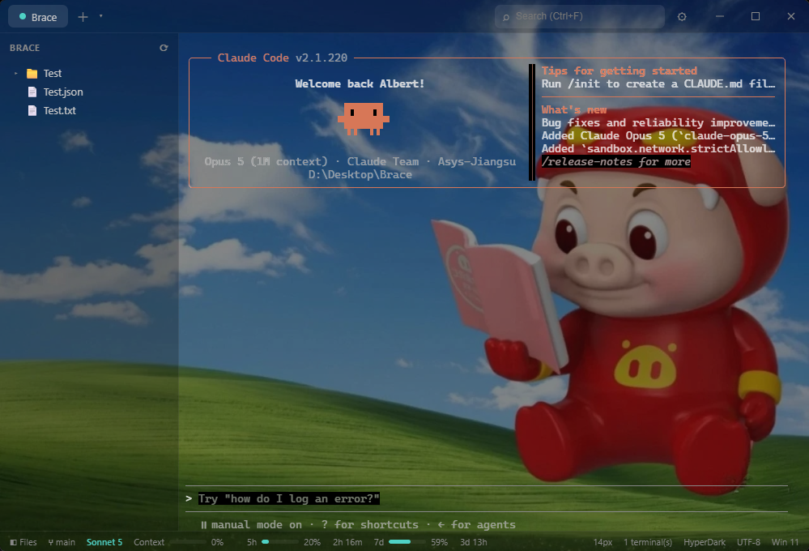
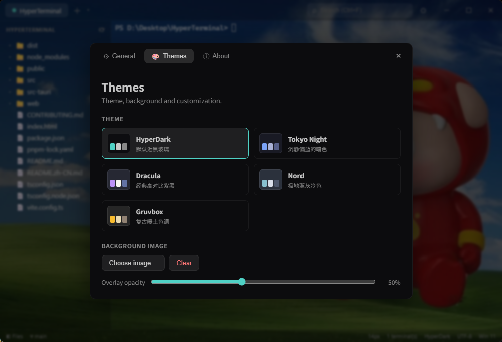

Brace shows your Claude & Codex usage right in the status bar — context window, 5-hour and weekly limits, live with reset countdowns. Plus multi-shell tabs, a cwd-aware file tree, themes and wallpapers.

Running Claude Code or Codex inside Brace? The status bar reads their usage and shows it live — no extra windows, no guessing when you'll get rate-limited.


Pick from HyperDark, Tokyo Night, Dracula, Nord or Gruvbox — or drop in any image as a frosted-glass background with an adjustable overlay. System / Light / Dark all follow along.
Everything a daily-driver terminal needs — and the small touches you didn't know you were missing.
PowerShell, CMD and Git Bash side by side. New tabs inherit your current directory automatically.
The sidebar follows your terminal's cd; double-click a folder and the terminal cd's right back.
Usage is read straight from local files. No telemetry, no accounts — your data never leaves the machine.
Signed one-click updates from GitHub Releases. Check, download, relaunch — done.
Tauri + Rust with a real ConPTY backend and WebGL rendering. ~3 MB installer, instant launch.
In-terminal search, clickable URLs, copy/paste with bracketed paste, and font zoom.
Download the installer, run it, and you're in. From there Brace updates itself.
First launch: Windows may flag it as an "unrecognized app" (the installer isn't code-signed yet) — click More info → Run anyway.